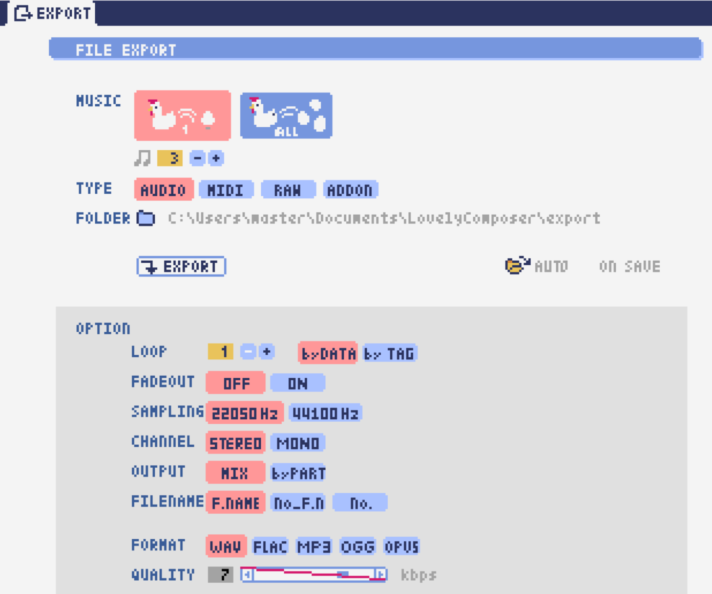

Lovely Composer Docs (ラブリーコンポーザ 公式説明書) - ver.1.2.0
q_and_a
音楽エディタ

基本的な画面レイアウトは上の画像のようになります。 それぞれの部分については後で説明します。
画面左下の？マークが赤い時は、吹き出し式のヘルプがマウスカーソル横に表示されます。
マウスカーソルのある部分についての説明が、画面下部にテキスト表示されます。（吹き出しでの表示より多少詳しいです。）
再生コントロール

画面の下側に、曲の再生に関するボタンがまとめられています。左から順に
停止ボタン … 曲の再生を止めます。停止中に停止ボタンを押すと、曲の先頭に戻ります。（再生中にスペースキーを押しても停止できます。）
再生ボタン … 曲を再生します。（停止中にスペースキーを押しても再生できます。）
1ページリピートボタン （円形の矢印） … 押して緑色にすると、現在開いているページのみでループ再生されるようになります。（この設定は曲ごとに保存されない、一時的な再生設定です。）
早送りボタン … 次のページに移動します。
巻き戻しボタン … 前のページに移動します。
ループスタートボタン （左側） … 押して緑色にすると、ループ時の戻り先を現在のページに設定します。緑（オン）の状態でもう一度押すと、灰色（オフ）になり設定が解除されます。
ループエンドボタン （右側） … 押して緑色にすると、ループ再生の最後の部分を現在のページに設定します。あとは同様です。
テンポ設定スライダー … 曲の再生速度が設定できます。数値が小さい（カーソルが左に近づく）ほど再生速度が速くなります。
となっています。
曲設定でテンポが「ページごとに指定」となっている場合、下画像のようなリンク切れアイコンが数値の上に表示されます。この場合、テンポはページ単位でひとつずつ別々に設定することになります。

曲のページ移動は再生ボタンの下側にあるビットマップ式スクロールバーでもできます。各色のドットは音符を表しています。現在選択中のページが明るく表示され、再生位置は白い縦線で表示されます。右上の数字はページ数です。ループ位置も矢印アイコンで表示されます。

曲の選択

画面の左上に曲選択ボタンがあります。
数字は現在開いている曲番号を表しています。+ボタンを押すと次の曲、-ボタンを押すと前の曲を開くことができます。曲番号は0～31番まで選べます。（※将来的に増える予定です）
左端のフォルダアイコンを押すとフォルダ選択ができます。ユーザ用フォルダ（LC_USER）やサンプル曲用フォルダ（LC_SAMPLE）が最初から用意されています。
サンプル曲用フォルダを開いているとき等は、下画像のように曲番号が赤く表示され、ファイル保存ができません。ご注意ください。
書き込み禁止の状態で曲を作ってしまった場合は、曲コピー機能を使って別の曲番号へコピーしてください。

フォルダ選択画面は以下のようになっています。
フォルダ名を選択してOPENを押すと、フォルダを開くことができます。
左下のフォルダオープンアイコンを押すと、曲データが格納されている実際のフォルダがOS側のエクスプローラ等で開かれます。
曲の保存・アンドゥ

曲選択ボタンの右隣にあります。
左から順に
曲のファイル保存
アンドゥ（元に戻す）
リドゥ（やり直し）
となっています。
ラビコンはオートセーブ式となっていて、曲移動時やアプリの終了時に曲データが自動的にファイルに保存されるようになっています。
そのため、ファイル保存ボタンを押す必要は必ずしもありませんが、ボタンを押した場合はその場で曲データがファイルに書き込まれますので、アプリの異常終了などの万一の事態のために押しておいた方が安心かもしれません。
実際の曲データは、LovelyComposerのフォルダ / music / 選択フォルダ / 曲番号.jsonlファイルに保存されます。
基本編集ツール

曲の保存ボタンの右にあります。
左から順に
ペン
消しゴム
ブラシ
範囲選択
切り取り
コピー
ペースト
範囲選択の操作対象レイヤー指定（選択中のパートのみ / 全パート）
範囲選択の透過コピー指定（通常コピー / 透過コピー）
となっています。
ペン
楽譜上で左クリックで音符の入力、右クリックで選択中の音色の試聴ができます。音符の上で右クリックするとその音色を選択（スポイト）することができます。
Shiftキーを押している間は、カーソルを水平移動に固定できます。
Proモードのボリューム入力では、音量を指定できます。パン編集では音の左右を指定できます。
消しゴム
楽譜上で左クリック、ドラッグで音符の削除ができます。
Proモードの音量編集では、音量指定の削除またはデフォルト値に戻します。またパン編集では、パン指定を削除します。
ブラシ
楽譜上で左クリックで現在開いているページの音符の音色を、すべて他の音色に変えることができます。音符の上でクリックすると同じ音色の音だけを塗り替えます。ドラッグ操作でなぞった音符のみ塗ることもできます。
Proモードの音量編集では、一括音量指定になります。またパン編集では、既存のパン指定の部分を塗りつぶします。
選択範囲
楽譜上の音符を選択します。選択後に選択範囲を左右ドラッグで移動、Alt+ドラッグでコピー、Deleteキーで削除します。また上下ドラッグで音程を変えられます。（トランスポーズ）
Proモードの音量・パン編集でも動作は今のところ同じです。
曲単位編集ツール

画面右上にあり、曲の設定および曲単位のコピー・貼り付け、消去（新規作成）ができます。
左から
曲の設定
爆弾ボタン（曲データの消去、新規作成）
曲データのコピー
曲データの貼り付け
となっており、画像右上のテキスト部分には、現在選択している曲フォルダ名が表示されます。
曲データの消去に対してもアンドゥができます。（間違えて消してしまっても慌てないようにしましょう）
サンプル曲など、書き込み禁止が設定されている曲データについてはこれらの操作を行っても保存されません。
楽譜（ピアノロール）

作曲時に一番中心となる編集画面で、ここで音符などを入力・編集することで曲を作っていきます。
ピアノロールと呼ばれる表示形式で、音楽の五線譜と同じように、縦軸は音程で、小節が縦線で区切られています。（五線譜風の表示にも変更可能です。）
左上の数字は現在のページ番号です。ページ移動は早送りボタンや巻き戻しボタン、ページスクロールバーで行います。
補助的に、ループ位置やミュート状態等の表示もされます。互換再生モード時はどのバージョン互換かが右上に表示されます。
音色アイコンが各パートの色で表示されます。デフォルトでは小さいアイコンで表示されます。
C4という文字の横に水平点線が表示されている位置の音程が「真ん中のド」となります。
デフォルトでは選択中のパートの音色は濃く、それ以外のパートの音は薄く表示されます。
通常パートとコードパートでは少し役割が違います。
パート選択

楽譜の左下にあるパート選択ボタンで 1 / 2 / 3 / 4 / C のいずれかを選択すると、選択したパートの表示・編集ができます。
1 / 2 / 3 / 4 のいずれかを選択すると、通常音色パートの表示・編集ができます。各パートの仕様は同じです。
パート選択部分で C を選択すると、コードパートの表示・編集ができます。 (C はコード=Chordの頭文字です)
通常音色パート

通常音色パートを選択している時、楽譜の上側に音色リストが表示されます。
音色リストを左クリックすると、ペンツールなどで使用する音色を選択できます。音色は複数ページに分かれており、+ボタンや-ボタンで別のページに切り替えられます。数字は現在のページ番号を表しています。
音色の種類には今のところ大きく分けて
鳴り続ける音色
鳴り続けない音色
音程が滑らかにつながる音色（スラー音色またはグライド音色）
があります。また、
楽譜上で右クリックで選択した音色の試聴ができます。
音色は音符1つごとに変えることができます。
各音色は、実際には「基本波形 + エフェクト」で作られています。どの音色がどの組み合わせでできているかは、画面下側のヘルプ表示で確認できます。
同じ基本波形の音色は、左右に並べることで音がつながって聞こえます。エフェクトの異なる音色を横に並べることで、細やかな演奏を実現しているユーザが多いようです。
コードパート

コードパートを選択している時、楽譜の上側にコード選択ツール（顔アイコン等）が表示されます。
基本コードの選択は楽譜の上側に表示される顔アイコンで、追加音はその右にあるボタンで設定します。
追加音は帽子、パワーコードは顔色でアイコン表示されます。
コードは一か所で指定すると、次のコードが現れるまで、引き続き同じコードの音を再生するようになっています。（黒い線が自動的に伸びていきます）
途中で止めたい場合はミュート（×マーク）を止めたい位置に指定してください。
楽譜上で右クリックでコードの試聴ができます。上部で “Rhythm” を表示中は、現在のページで選択しているリズムパターンでの再生、 Tone のときは矩形波のみでの再生となります。コードの音程は太い線で、コードの各構成音（ドミソなど）は細い線で表示されます。
Proモード

画像の一番上のPROスイッチをON（赤い状態）にすると、画面の一部が切り替わり、さまざまなボタンや上級者向け機能が表示されるようになります。
Proモードでは、上画像のボタンで、音符入力、ボリューム入力、パン入力を切り替えてそれぞれ楽譜上で入力することになります。
ボリューム入力（Proモード時のみ）
Proモードでボリューム入力タブを選択すると、楽譜の下部でボリューム指定ができるようになります。
指定できる音量の値は0～15の16段階になります。（これは8bitゲーム機を想定した仕様です。）
音量のデフォルト値は12(C)で、0は完全な無音です。
音量は棒の高さのほかに、最下部の数字（16進数）で表示されます。
16進数では A=10, B=11, C=12, D=13, E=14, F=15 を表します。
1段階は均一に2dBとなっていて、+6dB～-22dBの範囲で指定できます。
※なお、通常の音符入力タブでも、Altキーを押しながらペンツールで描くことでボリューム値を入力することができます。
パン入力（Proモード時のみ）

Proモードでパン入力タブを選択すると、音を中央 / 左 / 右 のどこから出すか（パン）を音符単位で指定できます。
Cが中央、Lが左、Rが右となっています。
パンは一か所指定すると以後の音符にも引き継がれます。
マウスホイールの上下で現在選択中のパンを変更できます。
表示オプション
楽譜の右側のボタンで、楽譜の表示設定を変更することができます。上から
ピアノロール表示 / 五線譜風表示(※) の切り替え
音符のアイコンサイズ変更
コード名の表示、およびリズムパターンで実際に鳴らされる音の音符表示のオン/オフ
パートのレイヤー表示方法の切り替え（レイヤー透過表示、全レイヤー通常表示、選択レイヤーのみ表示）
背景カラー設定 下の画像のウィンドウで、エディタの色や画面全体の色あい（システムパレットカラー）を指定します。
Proモード切り替え
※五線譜風表示はあくまでも背景画像を変更するだけのもので、正しい五線譜表示にはなりません（ピアノロールベースのため、線が等間隔でなかったりします。）

ページあたりの音符数の設定

楽譜の右上の数字はページあたりの最大音符数を表しています。
+ボタンを押すと1ずつ増やして最大32まで設定することができます。
-ボタンを押すと1ずつ減らして最小1に設定できます。
楽譜上にも最大音符数が縦線で位置表示されます。再生位置バーがこの縦線を越えると次のページに移動します。

曲設定で「ページごとに設定」にした場合、リンク切れアイコンが表示され、ページごとの音符数をひとつひとつ個別に設定できます。
ページ単位編集ツール

ビットマップスクロールバーはページ移動だけでなく、ページ単位の曲データ編集にも利用できます。
左上のボタンで、選択したページのコピー・貼り付けができます。（Ctrl + C、Ctrl + Vでも可）
また、Deleteキーで削除ができます。
ショートカットキーでの操作対象（フォーカス）は、枠線の色で表示されます。（現在は楽譜とビットマップスクロールバー間のみでの切り替え）
フォーカスは対象部分のクリックで切り替えられます。
右下の範囲選択ボタンを押すと、複数ページを選択可能になり、一括で操作できます。選択範囲のドラッグで移動、Altキーを押しながらのドラッグで複製もできます。
左下のモードボタンを押すと、ページ単位コピーの操作対象が切り替えられます。
すべて（デフォルト）
楽譜データとリズムパターン設定のみ（ページ単位のテンポ、音符数などの設定はコピーしない）
楽譜データのみ
楽譜データで選択した1パートのみ（別パートにコピー可能）
リズムパターン設定のみ
ページ設定のみ（ページ単位のテンポ、音符数などの設定のみコピーする）
スケール機能
一定のルールで入力できる音程を制限して、特定の音階の曲を入力しやすくする機能です。入力できない音程が鍵盤上に表示されます。 また選択時にはそのスケールでドから順に１つずつ上がった音がプレビュー再生されます。
上から
（ロック解除）
メジャースケール
マイナースケール
白鍵のみ
黒鍵のみ
琉球スケール
雅楽スケール
ホールトーン（全音間隔 / 1音飛ばし）
コード（コードで使用している音程のみ使える）
マジカルスケール1（コードと不協和音になる音を除外します。アボイドロック。）
で、+と-ボタンでキーを上下できます。
また、下の2つのスケールは、コードパートに入力されているコードに応じて変わる特殊なスケールです。これらを選択した場合は、キーは変えられません。
Ctrlキーを押している間はスケール機能が無効になります。一時的にスケール外の音を入力したい場合に便利です。
ツールリスト

別窓を開いて使うタイプの便利ツールの起動ボタンが表示されていて、押すとウィンドウが開きます。
左から
コードパターンツール
音色パレットツール
となっています。
コードパターンツール

定番のコード進行を一覧から選んで入力できるツールです。コードの知識がなくても、実際に音を鳴らして聞きながら好きなコード進行を選べます。
コード一覧のどれかを左クリックすると、楽譜上に選択したコードパターンがセットされます。
左端のプレビュー再生ボタン（スピーカーアイコン）を押すと、右側のコードをプレビュー再生します。
スクロールバーの操作またはマウスホイールの上下で、一覧をスクロールすることができます。
ウィンドウの下部はオプション設定項目です。
再生ボタンが有効（緑）の場合、コードパターンのセットと同時に曲が再生されます。（現在のリズムパターンの音でのプレビューができます。）
左端の+や-ボタンで、入力するコードのキーを上下することができます。
真ん中は「ページごとのコード数指定ボタン」（CHORD NUM / PAGE）です。未指定（グレー）の場合は、曲設定の「ページごとの小節数」に応じます。
CLOSEボタンでウィンドウを閉じます。
音色パレットツール

よく使う音色をまとめておける便利ツールです。
ユーザが自由に選んだ音色が上側、最近使った音色が下側に表示されます。 +ボタンを押すと現在選択している音色がパレットに追加されます。
音色アイコンの上で左クリックすると音色を選択でき、右クリックで削除ができます。 音色をすべて削除するにはクリアボタンを押します。ウィンドウを閉じるにはCLOSEボタンを押します。
通常パートを表示しているときは通常の音色パレット、コードパートの場合はコードパレットに切り替わります。
リズムパターン

コードパートで入力したコードに、さまざまなリズムや伴奏をつけて演奏してくれる機能です。（そのためコードが何も入力されていないと、何も鳴らない＆機能しません。）
上の絵は、現在選択されているリズムパターンを表していて、左右の三角ボタンでパターンを変更できます。
デフォルトの三本線アイコンでは、コードを純粋に和音で鳴らすだけですが、別パターンに変更するとリズムも刻むようになります。
それぞれサブパターンが4種類あり、絵の下の 1 / 2 / 3 / 4 の中から1つを選ぶようになっています。選択されたものがカラー表示され、それ以外はグレーで表示されます。
サブパターンの4番の右隣りのボタンは、リズムパターンの演奏速度（ページごとの小節数）です。x1は1ページに1小節、x2は1ページに2小節、x4は1ページに4小節のペースで演奏します。グレー表示時は曲設定の「ページあたりの小節数」の数値が使われます。
リズムパート設定

リズムパターンの音の演奏は、4つのパートで構成されていて、画像左下のボタンでそれぞれの演奏を個別にオン/オフできます。
アイコンは左から
和音、またはアルペジオ
ベース（低音部）
リズム、打楽器系
フリーパート（リズムパターンごとに自由な役割）
となっています。
アルペジエーター
画像右上のボタン類は、コードの構成音（ドミソなど）を同時に鳴らすのではなく、一音ずつ順番に鳴らす（アルペジオ）ようにするための機能です。
8bitゲーム機では同時発音数が非常に限られていて、コードを同時に鳴らすのが難しいため、よく使われている手法です。
アイコン画像が三本線の状態だと和音（アルペジエーターOFF）、点がいくつか並んでいるものを選ぶとアルペジオになります。点の並びのようにアルペジオの音程を再生します。
右のボタンはアルペジオの演奏速度（ページごとの小節数）です。x1は1ページに1小節、x2は1ページに2小節、x4は1ページに4小節のペースで演奏します。グレー表示時は曲設定の「ページあたりの小節数」の数値が使われます。
- その下のボタンは、左から
…
上下矢印 … パターンの上下反転
L … アルペジオの長さ（L = Length … 音符単位）
O … オクターブ変化を加える（O = Octave … グレー時はオクターブ移動しない）
となっています。
リズムパターンの編集ツール
右下のボタンは
現在のリズムパターンのコピー
リズムパターンの貼り付け
となっています。
ページ単位編集ツールを使うと、複数ページを一括で処理することもでき便利です。
アウトプットモニター

現在再生されている音の波形をオシロスコープのように表示します。出力するすべての音の合成結果を表示するので、曲だけでなく効果音などにも反応します。
MIX … 左右のチャンネルの音を合算して表示します。
L & R … 左右のチャンネルの音を別々の色で同じ領域に重ねて表示します。
L / R … 左右のチャンネルの音を別々の領域に分けて表示します。
ボリューム

再生ボリューム変更、各パートのミュートやソロ再生が指定できます。（ここでの設定は、曲ごとには保存されません。）
また現在再生されている音色等もアイコン他で視覚的に表示されます。
パート番号の左クリックで各パートのミュート、右クリックでソロ再生が指定できます。 ミュートされているパートは、パート選択部や楽譜上にもアイコン表示されます。
RESETボタン（リセットボタン）ですべての設定を初期値に戻せます。
Proモードでは、視覚表示に音量や出力チャンネルの表示が加わります。また、音量スライダーを0にセットできるようになります。
視覚表示には、曲データやミキサーでの指定値をかけあわせた最終的な結果（実際に鳴っている音と同じ）が表示されます。
ボリューム右下のボタンは、動画などを撮影するときのための、グリーンバック撮影（クロマキー合成）用のおまけ機能で、ダンサー関連以外の背景要素を一色で塗りつぶします。
ミキサー(風)

曲全体のパート別音量や出力チャンネルを一括で調整できます。Proモードでのみ表示されます。
中央の音量スライダーについては、楽譜上での音量指定の値を上下させます。左ドラッグのほか、マウスホイールの回転でも増減できます。音符ごとの音量は0～15(0～F)を超えた値にはなりませんので、常にスライダーで指定した数値通りに音量が変わるわけではありません。
最上部の出力チャンネルについては、表示されているチャンネルのみ音を出力します。左右クリックするとLR / L / Rを切り替えられます。
右上のスライダーは、全パートの音程を上下させます（トランスポーズ）。左ドラッグだと3くらいずつ変化してしまいますが、マウスホイールの回転で1ずつ増減できます。自分で作った曲やサンプル曲の試聴で音程を変えてみたりするのも面白いです。
パート番号ボタンを押すと、音量スライダーやチャンネル設定の有効/無効を切り替えられます。調整した結果の確認に使えます。
RESETボタン（リセットボタン）ですべての設定を初期値に戻せます。
楽譜側のパン指定でL、ミキサー側の指定でRだった場合、出力される音は無音となります。その場合は、ボリューム表示部では薄いグレーアウト表示されます。
ダンサー
『ダンジョンウィッチーズ』のキャラクターたちが曲のテンポに合わせて歌って踊ったり、いろいろな演出をしたりしてくれます。 間接的にメトロノームのような役割も果たします。
左クリックで別アニメパターンに変更、ドラッグで移動、右クリックで拡大縮小します。
歌っている音程は選択中のパートの音符の音程です。
曲のテンポとダンスの速度感があまりにも違う場合は、曲設定の『ページあたりの小節数設定』が実際の曲データと違っているかもしれません。
曲の設定

曲の設定を行う画面です。
上から
ページ数
ページあたりの音符数 （曲全体で共通 / ページごとに指定 の切り替え）
テンポ （曲全体で共通 / ページごとに指定 の切り替え）
ページあたりの小節数
ページあたりの小節数は、楽譜上の小節線、BPM表示やダンス速度、リズムパターン等の小節数設定が自動の場合などに影響します。
下側は通常設定する必要のない部分で、
パンロウ(Pan Law)の設定 中央と左右の音量バランスの設定
互換モードの設定 指定すると曲データをそのバージョンの仕様で再生します（古いデータがおかしく再生されないようにするためだけに使います）
となっています。
右下の絵には特に機能はありません。
テンポ
テンポは任意のBPM指定でなく、古いコンピュータ音楽のような速度指定方式になっています。
BPMの計算式は、誤差分を除くと以下になります。
BPM = (30 ÷ スピード) × ページあたりの小節数 x 30
※「スピード」はテンポスライダーの左の数値、ページあたりの小節数は曲設定で1～4に可変
初期状態だと120 BPM = (30 ÷ 30) x 4 x 30 となっています。
吹き出しヘルプ表示ボタン

画面左下にあり、押すと吹き出しヘルプ表示をオン・オフを切り替えられます。操作を一通り覚えたらオフにしても大丈夫です。
MIDI入力
ラビコンの音色を使って、MIDIキーボードで演奏することができます。
（音符入力、UI操作、録音などには対応していません。）
使用したいMIDI入力デバイスを環境設定ツールで選択できます。デフォルトで有効ですが、入力を無効にすることもできます。
ver.1.2.0現在では、入力から発音までに多少の遅延があります。（60fpsで処理しているため）
画面切替タブ

画面左上にある画面切り替えタブです。左クリックで選択した画面に切り替わります。
左から
EDIT … 作曲画面
EXPORT … エクスポート画面
となっています。
画面切替え時に編集中の曲データがファイル保存され、アンドゥなどの履歴も消去されます（書き込み禁止の場合は保存されません）
エクスポート画面
曲データを音声ファイルやMIDIファイルとして出力するための画面です。
共通設定
ALL MUSIC / 1 MUSIC ボタン … 全曲をファイル出力するか、選択した1曲のみ出力するかを選びます。1 MUSICを選択した場合は、右の曲番号セレクタで対象の曲を選べるようになります。（初期値は作曲画面で選んでいた曲の番号となります。）
フォルダオープンアイコン … エクスポート先フォルダをOS側のエクスプローラ等で開きます。
AUTOボタン … 有効時（カラー表示の場合）、エクスポート処理完了時に自動的にエクスポート先フォルダを開きます。
Wave出力

EXPORTボタン … 現在の設定で、音声ファイル出力を実行します。
LOOP … ループ区間の再生をする回数を設定します。（1の場合は繰り返し再生になりません）
by DATA … 音声データを指定ループ回数分の長さで生成します。
by TAG … 音声データにループ位置情報をテキストタグとして埋め込むことによって、RPGツクール等のループタグ対応ソフトでの切れ目のないイントロつき無限ループ再生などに対応させます。（ループ回数は指定できません。）
SAMPLING … サンプリング周波数を指定します。22050Hzがデフォルトです。（現状では内部的に22050Hzで音を処理しており、44100Hzに設定してもデータ上の音質は向上しません。）
CHANNEL … ステレオ出力（2ch）かモノラル出力(1ch)かを指定します。ステレオ出力がデフォルトです。
FORMAT … 音声ファイル形式を選択します。WAVの場合非圧縮Wave形式ファイル、それ以外は圧縮音声形式となり、Waveファイルを出力した後に変換される仕様になっています。（Waveファイルも生成されます）
QUALITY … 圧縮音声の音質（圧縮レベル）を設定します。数値が大きい方が高音質ですが、ファイル容量は大きくなります。右側に変換パラメータがグレー表示されます。（FORMATでWAV以外を選択した場合以外のみ有効）
備考
ループ方式でタグを指定する場合は、出力ファイル形式は基本的にOGGまたはWaveを推奨します。（それ以外は対応ソフトが少なく、MP3の場合は対応していても仕様上ループ時の音飛びが避けられません。）
RPGツクールVX以降の場合OGG、Unityの場合Waveでループ再生できたことを確認しています。（1.2.0のリリース時点。動作保証はしていません。）
ループをタグ式にした場合、常に2周分の音声データが生成されます。これは、曲の終わりからループ開始位置に戻る瞬間に音を違和感なく連続的につなげるため（音飛びのようなものを生じさせないようにするため）です。
MIDI出力

EXPORTボタン … 現在の設定で、MIDIファイル出力を実行します。
LOOP … ループ区間の再生をする回数を設定します。（1の場合は繰り返し再生になりません）
by DATA … MIDIデータを指定ループ回数分の長さで生成します。
by TAG … MIDIデータにループ位置情報をテキストタグとして埋め込むことによって、RPGツクール等のループタグ対応ソフトでの切れ目のないイントロつき無限ループ再生などに対応させます。（ループ回数は指定できません。）
PROG.CHG. … プログラムチェンジ（音色変更）を出力するかどうかを指定します。（有効にしないとどの音も同じ音色になります。）
CONVERT … AUTOを指定した場合、連続した音符をつなぐ等の処理をしたMIDIデータを出力します。（デフォルト設定） RAWの場合、Lovely Composerの生データをそのままMIDIデータに置き変えて出力します。
環境設定ツール

使用するMIDI/オーディオデバイスの選択や、オーディオバッファサイズの設定ができます。
設定はラビコンの起動時に有効になります（ラビコン起動中に設定した場合は、再起動まで反映されません。）
オーディオバッファサイズは小さくした方が再生や一部表示のレスポンスが早くなりますが、小さくしすぎると音が再生できなくなったりブツブツとノイズが混ざったり、再生が不安定になる可能性があります。最適値はPC環境によって異なります。
Q&A
起動ができない … セキュリティ警告が出た場合

ラビコンをダウンロードした後に初めて起動する場合、上のような警告が表示され、「実行しない」のほかに「実行」ボタンが表示されない場合があります。この場合は矢印で示した場所にある「詳細情報」を押すと、「実行」ボタンが表示されるようになります。
ソフトのバージョンアップ（データ移行方法）
曲データの移行は、新しいバージョンの曲データフォルダに、今までのバージョンの曲データフォルダをコピーすることで行えます。曲データフォルダは、LovelyComposerフォルダ/music/ 以下にあります。（曲データファイルは、各フォルダ内に入っている ” 曲番号.jsonl “” (00.jsonl等) です。）
環境設定を移行したい場合は、exeファイルと同じ場所にある app_settings.json ファイルを新しいバージョンへコピーします。
※データコピーの方向を間違えないように気を付けてください! 間違って逆にすると今まで作った曲が失われてしまいます。念のため事前にバックアップを取っておくと安心です。（将来的に、バージョンをアップデートしやすくする予定はあります）
音割れする、ノイズが聞こえる
アウトプットモニターで波形がはみ出て潰れるような場合、その部分で音割れします。
根本的には音が大きすぎるのが原因なので、音を重ねすぎないようにすると解消します。
画面右下のマスターボリュームで音量を下げると一時的に解消します。
波形の大きな音色を避けると問題が起きづらいです。
ユーザが意識せずともなるべく音割れが起こらないようにしたい所ですが、デジタル音声の原理的な問題でもあるのでちょっと難しいところでもあります。
曲ファイルが開けない
開けない理由が楽譜上にエラーメッセージ表示されますので、ご確認ください。
古いバージョンで作成したデータは新しいバージョンで開けますが、逆の場合は開けません。最新バージョンで開けるか確かめるなどしてください。
曲ファイルが保存できない
サンプル曲などでファイル書き込み禁止設定がされている曲を開いているとき（曲番号が赤い表示の時）は、ファイル保存ができません。ユーザーフォルダを選択するなどしてください。（すでにデータを入力してしまっている場合は、曲のコピーボタンを押してから、別の曲番号に曲を貼り付けてください。）
OS側で曲データファイルに書き込み権限があるかなど確認してください。
新しくフォルダを増やしたい
OS側で LC_USER フォルダを複製（コピー・貼り付け）して好きな名前に変えてください。（半角英数字・記号のみ）
新規フォルダだけを作っても、フォルダ一覧に表示されません。（”lcdata.jsonl” が入っている必要が今のところあります）
ショートカットキー
一般的な操作
ファイルの保存 … Ctrl + S
アンドゥ (元に戻す) … Ctrl + Z
リドゥ (進む) … Ctrl + Y
コピー … Ctrl + C
カット … Ctrl + X
ペースト … Ctrl + V
すべて選択 … Ctrl + A
選択解除 … Esc
選択したものを削除 … Delete
アプリケーションの終了 … F10
フルスクリーン化 … Alt + Enter
作曲画面
再生/停止 … スペース
1ページループ設定 … O (オー)
次のページに移動 … → または Shift + X
前のページに移動 … ← または Shift + Z
パート選択 … 1,2,3,4,5
ツール切り替え
ペン … Q
消しゴム … W
ブラシ … E
範囲選択 … R
コード選択
ミュート … Shift + A
Major … Shift + S
Minor … Shift + D
Dim … Shift + F
Aug … Shift + G
SUS4 … Shift + H
7th … Shift + C
9th … Shift + V
Power … Shift + B
次の音色一覧 … Ctrl + W
前の音色一覧 … Ctrl + Q
次の曲を開く … Ctrl + 2
前の曲を開く … Ctrl + 1
カーソルの平行移動 … Shiftを押し続ける
音符入力タブでボリューム入力 … Altを押し続けながらペンツール
選択範囲の複製 … Altキーを押しながら選択範囲のドラッグ
リズムパターン設定のコピー … Alt + C
リズムパターン設定のペースト … Alt + V
ソフトウェアキーボード
演奏 … Aの行, Zの行でピアノ鍵盤の並び
1オクターブ上げる … Page Up
1オクターブ下げる … Page Down
臨時に1オクターブ上げる … ↑を押し続ながら
臨時に1オクターブ下げる … ↓を押し続ながら
ファイルの書き込み禁止設定 … Ctrl + Alt + L
仕様
パート数: ユーザー 4パート + コード・リズムパターン （音色は1音ごとに変更可能）
曲の長さ: 32音符 x 256ページ分 (最大1024小節)
音域: C1 ～ B7 （MIDI基準、7オクターブ）
音色: 50パターン (「基本波形 + エフェクト」の組み合わせで1つと数えた場合)
音量: 16段階 (1段階2dB、0は無音)
ステレオ/パン: 中央 / 左 / 右 の切替え
イントロ対応ループ機能
Waveファイル出力機能
MIDIファイル出力機能
MIDIキーボード対応 （音の確認・簡易演奏用。データ入力や録音、UI操作等は不可）
オートセーブ式
Proモードで作成した曲は、ProモードがOFFの状態でも同じように再生されます。
古いバージョンで作成したデータは新しいバージョンで開けますが、逆の場合は開けません。（例えばver.1.0系で作成した曲データは、ver.1.1系で同じように読み取ることができます。ただし逆に、1.1で作成されたデータを1.0で開くことはできません。）
データ仕様に変更が入ると、2番目のバージョン番号（1.x.0）が変わります。データ仕様に変更が入らないアップデートでは、末尾のバージョン番号が変わります。(1.1.x など)